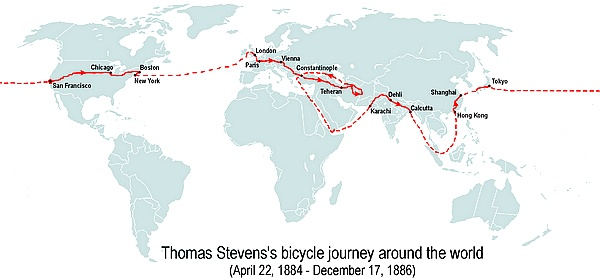
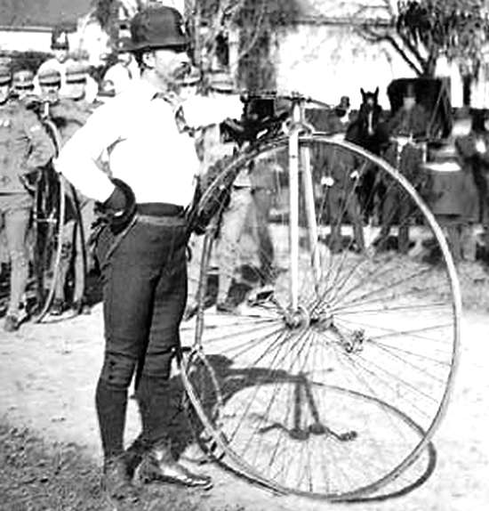

Comme tout ce qui compte dans la vie, un beau voyage est une oeuvre d'art : une création. De la plus humble à la plus haute, la création porte témoignage d'un créateur. Les pays ne sont que ce qu'il est.
André Suarès ( le Voyage du Condottière )
Autour du Monde à Bicycle : le voyage de Thomas Stevens, 22 avril 1884 - 17 décembre 1886

Quand Thomas Stevens entreprit son voyage la terre n'était plus terra incognita depuis déjà longtemps. Marco Polo, les conquistadors, les explorateurs, les colonisateurs l'avaient foulée.
Mais si le voyage de Thomas Stevens fut un exploit, si son récit séduisit les lecteurs et les auditeurs de ses lectures publiques, c'est parce ce que ce fut l'exploit d'un homme seul, sur un véhicule mu par la force de ses muscles, qui traversa le monde en environ 2 ans et demi.
Les ouvrages de Jules Vernes fascinaient les lecteurs, dont le Tour du Monde en 80 jours publié en 1872, ainsi que les aventures de l'explorateur Stanley dans les années 1870 ; des héros individuels et courageux qui accomplissaient des exploits, des hommes auxquels s'identifiaient l'homme occidental de cette fin de XIXè siècle.
Des odes, des poèmes furent écrits en hommage à l'intrépide cycliste, les journaux chantèrent ses louanges.
Visionnaire, le New-York Times du 03 octobre 1885 écrivait : "Nous aurons des expéditions en tricycle pour le Tibet, des circuits touristiques à bicycle jusqu'à Pékin".
Au retour de son voyage en solitaire autour du monde en bateau, entrepris en 1895, Joshua Slocum ( le premier à avoir fait un tour du monde en bateau en solitaire ) constatait qu'il n'avait " découvert aucun continent, sans doute parce qu'il ne restait rien à découvrir " ; il faisait cependant la remarque : "Faire son propre chemin vers des terres déjà découvertes est une bonne chose".
Thomas Stevens a pris la route de 22 avril 1884 à 08 heures et est arrivé au terme de son tour du monde le 17 décembre 1886, soit après 2 ans et 8 mois de voyage.
Voyageur et cycliste inlassable, animé d'une détermination et un courage sans faille, il a franchi tous les terrains sous tous les climats, bien souvent poussant son grand-bi plutôt que pédalant, à cause de l'état des routes ou chemins de l'époque, magnifique interprète du proverbe : qui veut, peut ; et qui ose, fait.
Thomas Stevens a traversé le monde à la fin du XIXè siècle, donc un monde de la fin de ce même siècle.
Il ne disposait donc pas du téléphone portable, pas d'ordinateur, pas de télévision pour être informé (enfin, si on peut dire) de l'état du monde, le téléphone fixe n'en était qu'au début de son développement et seulement dans certains pays (inventé en 1877). Pas de gps, pas de balise argos, pas de guide de voyage pour la plupart des endroits qui'il allait traverser.
Thomas Stevens a pris la route sans avoir passé des mois à préparer son voyage, apprenant à faire du gand-bi seulement dans les semaines précédant son départ. Quand il s'est élancé, le 22 avril 1894, il n'avait pas de sponsor, pas reçu de dons par Paypal, ni de Bitcoins, avait payé lui-même son grand-bi Columbia ( le modèle Standard) au prix fort, environ l'équivalent de 2500 dollars actuels, soit de six mois à une année du salaire qu'il gagnait quand il travaillait comme mineur ou comme lamineur dans les fabriques de la compagnie de chemin de fer Union Central, du même coup amputant ses économies de la moitié de leur montant.
Faute de place sur le grand-bi ( pas de porte-bagage, de sacoche cyclo-campeur, pas de remorque), peut-être aussi de préparation, ou soucieux de dépenser le minimun avant son départ il n'emporte quasiment que ce qu'il avait sur le dos.
Pour la traversée des États-Unis il a souvent dormi et mangé grâce à la générosité locale, souvent aussi trouvé hébergement dans les maisonnettes d'entretien du chemin de fer, chemin de fer dont il a beaucoup suivi le tracé.
Était-ce de l'inconscience, de la confiance en sa chance ? Toujours est-il que Thomas Stevens n'avait pas vraiment de plan de financement de son tour du monde. Ce n'est qu'une fois arrivé à Boston que l'opportunité financière s'est offerte à lui et alors peut-être vraiment la décision de poursuivre autour du monde ou en tout cas la possibilité effective de poursuivre...
En effet, Une fois arrivé à Boston, le 04 août 1884 à 14 heures, il rencontre Albert Pope, premier et, à l'époque, plus grand constructeur de cycles des États-Unis ( Pope Manufacturing Company ) sous la marque Columbia, fondée à Boston mais dont les usines sont à Hartford. Rappelons qu'à cette époque, les années 1880 - et ce depuis les années 1870 - la production mondiale de cycles est en presque totalité des grand-bi.
Albert Pope fournit à Thomas Stevens un grand-bi de sa marque Columbia, un modèle Expert à la place du Columbia Standard que Stevens s'était acheté à San Francisco ; le Columbia Expert est plus avancé mécaniquement que le Standard; notamment la tête de direction, la finition, etc... Albert Pope fait également apporter un financement à Stevens par la revue Outing - dont il est le propriétaire -, première revue américaine consacrée entièrement au sport et activités de plein air, qu'il vient de racheter et qu'il a fusionnée avec Wheelman un magazine qu'il a créé antérieurement et qui traitait uniquement d'informations et de récits cyclistes.
En échange de cette aide financière, Thomas Stevens, qui n'embarquera que le 09 avril 1885 pour l'Europe et poursuivre son tour du monde, rédige pour la revue Outing un récit de sa traversée des États-Unis ; celui-ci sera publié au cours de l'année 1885.
Toujours afin d'appuyer financiérement Stevens, Albert Pope en fait un correspondant spécial pour la suite de son voyage.
Et le 09 avril 1885, à 13 heures, Thomas Stevens embarquera à New-York (USA) pour Liverpool (GB) où il arrivera le 19 avril à midi ; quelques jours plus tard il reprend la poursuite de son voyage autour du monde, vers l'est, toujours l'est...
Et il poursuivra sans faillir son dessein, traversant :
A lire, une très intéressante étude de Jeremiah Rau ( thèse d'histoire à l'université de Wisconsin ) sur le concept de virilité en Amérique à l'époque du voyage de Thomas Stevens, qui a pu jouer un rôle sur l'idée d'entreprendre ce voyage : Around The World on a Bicycle, a Study of American Manhood 1884-1887. Lien vers le document Pdf : http://bit.ly/2Gpa5Ay
Lien vers la page de présentation sur le site de University of Winsconsin : https://minds.winconsin.edu/handle/1793/69460
Thomas Stevens et son grand-bi Columbia Expert, en 1887, après son tour du monde.

Nous reconnaissons un splendide type d'homme. Un héros formé sur le modèle de Stanley.
New York Times, octobre 1885
ADMINISTRATIVIA
Dernière mise à jour de cette page : 03 mai 2017
URL : http://orkic.github.io/bicygonzo/atwoab/elementoftravel.html
Contactez-nous : Contact
Website © Copyright - ef. Bicy Gonzo.